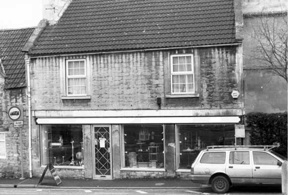

Type of building:
Mid mixed terrace shop
Listing:
Not listed
Plan and elevation:
A double pile two-storey building running east-west with an attached single pile
two-storey building running at right angles southwards from the west corner. Plus
a single storey extension.
Summary of the probable main building
history:
Late 18th Century on earlier foundations but rebuilt in the late 19th Century.
A mid 20th Century shop window.

North elevation
Exterior:
North facing elevation fronts the street and consists of a plate glass and aluminium
shop window filling the width of the ground floor. String course above. The first
floor is constructed of coursed squared rubble with two window openings in dressed
stone surrounds; formerly sash but now fitted with UPVC windows. West gable end
constructed of ashlar, east gable end (seen from interior) rubble stone. Tiled
pitched roof with raised coping stones. Ashlar chimney stack to east gable.
The attached two storey building running southwards is single pile and constructed of coursed rubble stone (wall thickness c. 52cm.). It appears to consist of former cottages; possibly, one two unit cottage and one single unit cottage. The former has two window openings at ground floor level, one lower and wider than the other (both formerly contained sash windows) and a dressed stone chamfered and stopped door surround. The latter has one blocked window and a blocked doorway with a chamfered dressed stone surround. Quoins appear on the former gable end. Both cottages face onto a narrow lane or alley (approx. 2.24m wide), which is now sealed with concrete blocks at both ends. A ring for tethering animals is fixed to the lane's west wall. The cottages share a pitched roof, tiled with stone slates present at eaves level. One ashlar chimney stack. Raised coping stones. Attached to the south gable wall (of ashlar), there is another structure under its own roof with two walls constructed of rubble stone (about 46cm thick) and one wall of concrete blocks. It has a blocked window or door facing south and modern double doors in the north-west corner opening into the alley.
The modern first floor above is constructed of reconstituted Bath stone and has a hipped tiled roof. This area is in separate occupation and was not surveyed.
The extension to the east is a modern concrete block, single storey construction under a flat roof.
Interior:
The shop area (G1) contains two stone "piers", both apparently the remnants
of a former wall. The central pier supports a boxed-in RSJ, trenched into the
west wall and supported by a brick pier against the east wall. A timber beam appears
on the west wall at ceiling level (this section of the wall is a party wall).
The east wall houses a cast iron grate with a dressed stone surround (this fireplace
has been sealed in since seen). The south wall contains a cast iron open range
with a swinging trivet, subsidiary grate and oven set in a stone depressed four-centred
arched fireplace. The range is dateable to about 1780-1790. An inserted doorway
in the south wall and two steps down provides access to the former cottages. Two
of the three windows openings in this part of the property are empty but the third
externally blocked window opening (in G3) still retains a six over six sash window.
G3 contains a dressed beaded stone fire surround, stone flagged floor and residual
tongue and groove panelling. A large fireplace may also have been present on the
east lateral wall of G2. This wall is heavily battered at its base on its external
side (visible in G5). The external door of G2 is still in place - tongue and groove
with wrought iron strap hinges secured by nails. G4 is constructed against the
ashlar south gable end of G3 and has modern double doors and empty joist holes.
G5,6,7 & 8 are purely modern concrete block constructions.
Date & development:
On the evidence, it is suggested that G2 and G3 are late 18th Century reconstructions
of much earlier cottages facing on to a lane, which gave them direct access to
the street. The eastern section of G1 was probably an independent cottage of about
the same date, with a south-west first floor area bridging the lane to provide
a through way for the lane under. This seems to accord with the building as shown
on the Batheaston Tithe Map of 1840. The present more forward frontage which seals
off the lane, and leaves remnants of the original external wall as isolated piers
in the modern shop area, appears to be of late 19th Century date (with a later
20th Century shop window added). The first edition 25" Ordnance Survey Map
(surveyed 1883) shows the present forward building line. G4 may have been fashioned
from a former lean-to or partially walled yard. The remaining structures are mid
20th Century storage areas.
Ownership / occupation:
The 1840 Tithe Apportionment Schedule shows Ann Weaver as the owner and occupier
of the property described as "house and garden". The cottages facing
the lane appear from the Tithe Map to be by now merely service areas to the residential
part of the property facing on to the street. The 1881 Census returns show the
property in the occupation of William Wheaver (or Whearer), grocer. The property
remained a grocery shop until 1999 in the ownership and occupation of the third
generation of the Dafnis family.
References:
- The Batheaston Tithe Map 1840 and Apportionment Schedule, Somerset Record Office.
- 1881 Census returns on microfiche, Bath Public Library
- Batheaston Society Archives
Reference Pictures
| View
of “The Lane” |
Late
18th century - early 19th century range |
Survey Drawings
| Ground
Plan |
Images from the Archives
| BE
019 as shown on the 1840 Tithe Map (no. 110) |